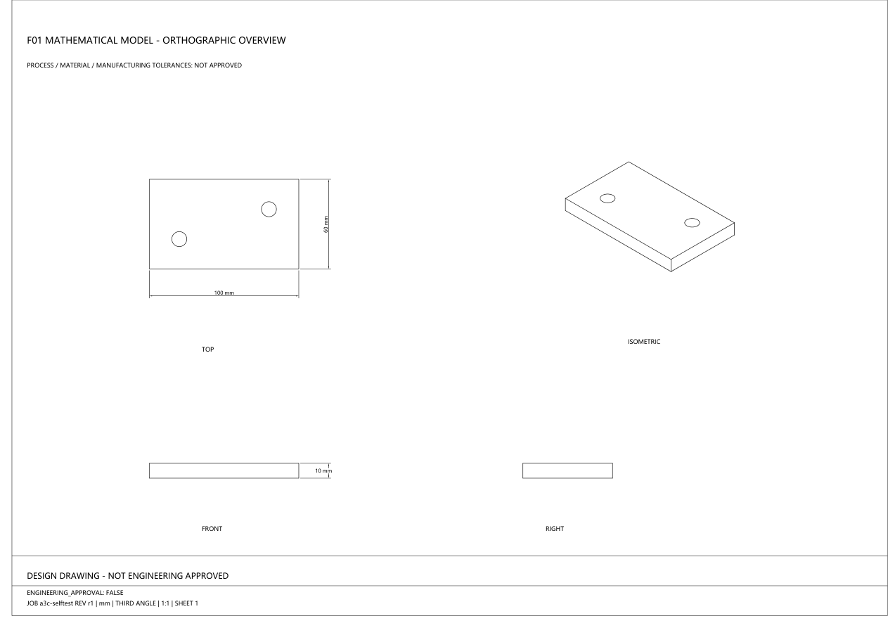

Concept design概念设计
Bind a brief and its unknowns, compare five independently authored concepts, and capture the selected revision before visual delivery.绑定需求和未知项，比较五席独立构思，在交付概念视图前记录选定版本。
Agent-Engineered Dual-Entry CAD Governance & Orchestration SpineAgent 工程化工业 CAD 双入口编排与可信治理骨架
How do AI agents work on the same CAD decision without losing provenance or turning assumptions into approvals? Trace the public Python governance and orchestration from shared facts and blind review through revision gates and delivery evidence.怎样让 AI Agent 协同完成 CAD 决策，同时保留证据来源，避免把假设当作批准？在公开的 Python 治理与编排层，可以从共享事实和盲评追踪到版本门控与交付证据。
Source-derived governance, orchestration and contracts run on digest-checked synthetic fixtures. The public adapter returns pre-generated results.同源治理、编排与契约在经摘要校验的合成夹具上运行，公开适配器返回预生成结果。
CoreEnginePort separates calibrated PDF/DXF intake, parameter mapping, B-Rep operations, independent readback, and rendering from the public package.CoreEnginePort 将 PDF/DXF 标定取数、参数映射、B-Rep 操作、独立回读和渲染隔离在公开包之外。
Bind a brief and its unknowns, compare five independently authored concepts, and capture the selected revision before visual delivery.绑定需求和未知项，比较五席独立构思，在交付概念视图前记录选定版本。
Review source objects and missing engineering data before confirming the drawing revision. Replay exercises that binding on a fixed synthetic drawing.复核原图对象和工程缺项，再确认图纸版本。公开回放以固定合成图验证该绑定。


Both figures are bounded development evidence. 两图均为限定范围的开发证据。 Media provenance / 素材来源
Seven port operations keep private CAD behind a fixture allowlist. Requests outside public scope return a refusal.七个端口操作通过夹具白名单隔离私有 CAD。超出公开范围的请求返回拒止。
The v1.1 projection rewrites allowed evidence paths and removes identity signals while retaining the engineering claim.v1.1 重写允许的证据路径，去除身份线索，保留工程判断所需内容。
Seven criteria and 128 common weight vertices show when pairwise order can reverse.七项标准与 128 个共同权重顶点可揭示两案排序何时反转。
The local check starts from emitted files and frozen intent. The public replay verifies declared fixture and delivery bytes.本地独立核对从输出文件和冻结意图出发。公开回放核实声明的夹具与交付字节。
A revised input invalidates affected approvals. Outbox, send, consume and ACK each have distinct evidence.输入改版使受影响的确认失效。入箱、发送、消费和 ACK 各有证据。
Schema checks, 25 states, and five verification layers serve distinct purposes. G1 checks data and G2 checks an independent authorization event.Schema 校验、25 态机与五层验证承担不同职责。G1 核工程数据，G2 核独立授权事件。
| Tier / 层 | Contents and distribution / 内容与分发边界 |
|---|---|
| A · Private | Calibrated drawing intake, parameter bridge, OCCT B-Rep, native sheet output, independent readback, scene rendering.原图标定取数、参数桥、OCCT B-Rep、原生出图、独立回读与场景渲染留在私有层。 |
| B · Source display | Sanitized governance source, skill and role contracts, 12 schemas plus one runtime policy and acceptance checklist.脱敏治理源码、Skill 与角色契约、12 份 Schema、一份运行策略及验收清单。 |
| C · Source display | Lifecycle, gates, handoff and delivery, with a seven-operation port and an allowlisted replay engine.生命周期、门控、交接、交付，加上七操作端口和白名单回放引擎。 |
Run these commands at the source root with Python 3.12. 使用 Python 3.12，在源码根目录执行。
python -m cad_agent_showcase demo concept --replay
python -m cad_agent_showcase demo drawing --replay
python -m cad_agent_showcase demo confirmation-mutation --replay
python -m cad_agent_showcase demo eval --replay
python -m cad_agent_showcase demo gates --replay
python -m cad_agent_showcase verify-boundary
python contracts/verify_checklist.py
python -m unittest discover| Exit / 退出码 | Meaning / 语义 |
|---|---|
0 | Requested scenario completed or expected checks matched. 场景完成或检查符合预期。 |
1 | Refusal or disclosure-scan finding. 拒止或分发扫描有发现。 |
2 | Input, usage or fixture-integrity error. 输入、用法或夹具完整性错误。 |
3 | Replay engine or stage failure. 回放引擎或阶段失败。 |
The repository carries 12 Draft 2020-12 schemas and one runtime policy. All 72 acceptance items have status NOT_RUN. The structural check verifies the checklist and coverage records.仓库包含 12 份 Draft 2020-12 Schema 和一份运行策略。72 项验收条目全部为 NOT_RUN。结构核验检查清单与覆盖记录。
Checklist / 清单 · Coverage / 覆盖 · Runtime policy / 运行策略
The workflow config uses Windows and Ubuntu with Python 3.12. Consult GitHub Actions for the commit in use.CI 配置使用 Windows 和 Ubuntu 上的 Python 3.12。运行状态请按所用提交在 GitHub Actions 查看。
Workflow configuration / CI 配置 · Commit checks / 提交检查 · Disclosure test / 分发边界测试
Source display with rights reserved, subject to applicable law, platform terms and explicit agreements. The public package covers synthetic inputs, simulated confirmations and pre-generated media. Live agents, production CAD generation, real-user drawing processing and manufacturing approval are outside that scope.源码展示、权利保留，受适用法律、平台条款和明确协议约束。公开包限合成输入、模拟确认和预生成媒体。实时 Agent、生产用 CAD 出图、真实用户图纸处理及制造批准在此范围之外。
The engineering flags verified_truth, engineering_approval, can_enter_p2, and production_approved stay false.上述四个工程标记始终为 false。
Source-display terms / 源码展示条款 · Rights and sources / 权利与来源 · Public architecture / 公开架构